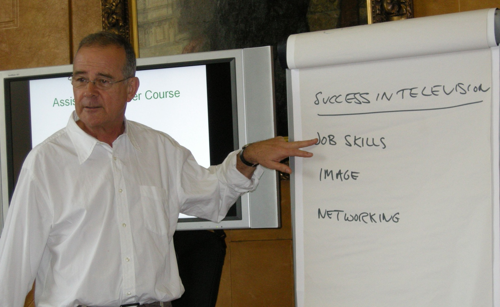
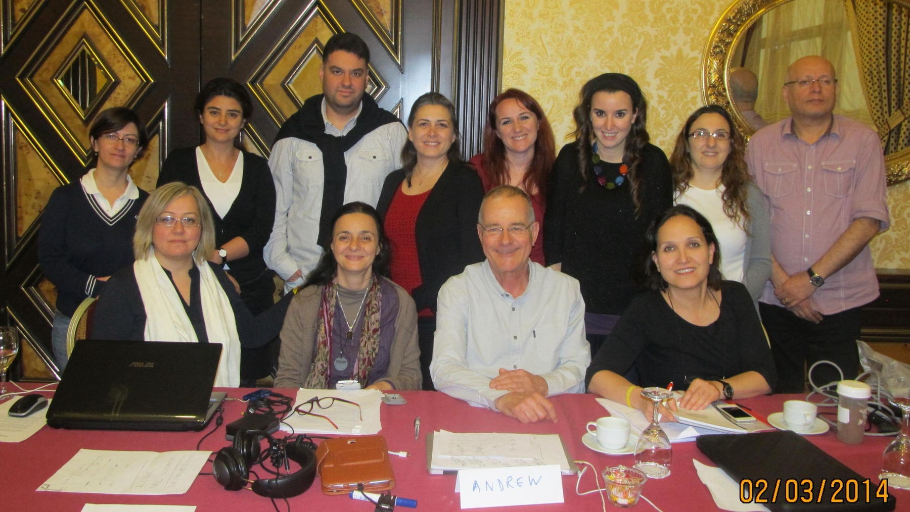
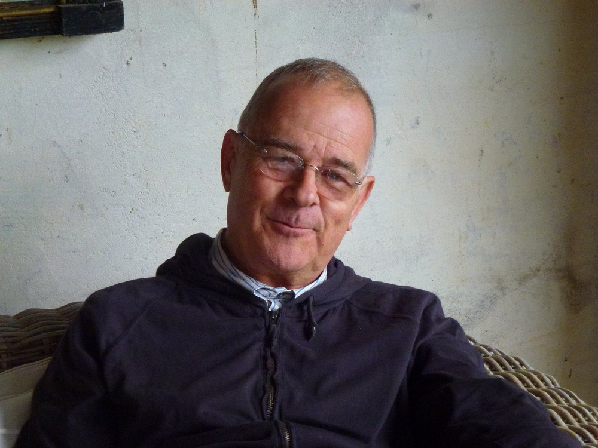

TRAINING & CONSULTANCY

Training
I was reluctant to get involved in training, but once started I found it rewarding and enormous fun. And of course the old cliché is true, working with talented people you get as much back as you give.
For the BBC Academy, I created and delivered all the training for television producers, assistant producers and Writing to Picture for ten years. I helped establish and deliver the BBC's Creativity training programme with Frank Ash and took on a lot of Storytelling for the BBC.
For Channel 4, I delivered numerous courses every year for researchers and in support of their diversity schemes. Based in their London and Glasgow offices, my courses covered every stage in ideas development from conception to pitch.
Internationally, I have delivered numerous courses for the talented producers and directors at the Turkish state broadcaster, TRT, and was privileged to train senior staff at Thailand's Ministry of Foreign Affairs in media presentation, interview techniques and communicating effectively with the press.
Most recently, in 2025, I delivered a successful storytelling course at Hereford College of Arts with my friend and colleague, Susie Attwood.
Although I am no longer actively seeking new projects, I am always pleased to offer advice, training, mentoring and consultancy whenever I can.
SELECTED BROADCASTERS, UNIVERSITIES AND INTERNATIONAL PARTNERS

AREAS OF TRAINING, CONSULTANCY & MENTORING
Storytelling
A general introduction followed by a raft of practical development 'tools' to help filmmakers find the right way to tell the right story in order to engage their chosen audience and deliver their 'message'.
Creativity
Practical techniques for developing creative thinking in individuals and teams.
Writing to Picture
A BBC Academy course developed specifically for filmmakers.
Shoot for the Edit
Planning and filming with the editing process firmly in mind.
Pitching: The Art of Selling
Presenting ideas clearly, confidently and persuasively.
Writing Winning Proposals
Structuring and communicating ideas effectively.
Personal Presentation
Developing confidence and communication skills.
Interview Techniques for Press, Radio and Television
Practical approaches to media interviews and public communication.

If you would like to contact me about any of the work featured on this site, please get in touch.
SEND A MESSAGEA FINAL THOUGHT
I am conscious that much of my training was designed to meet the needs of producers and directors in the competitive broadcast landscape we have today. It had to be. But my heart goes out to the individual who has something to say and their own way of saying it.